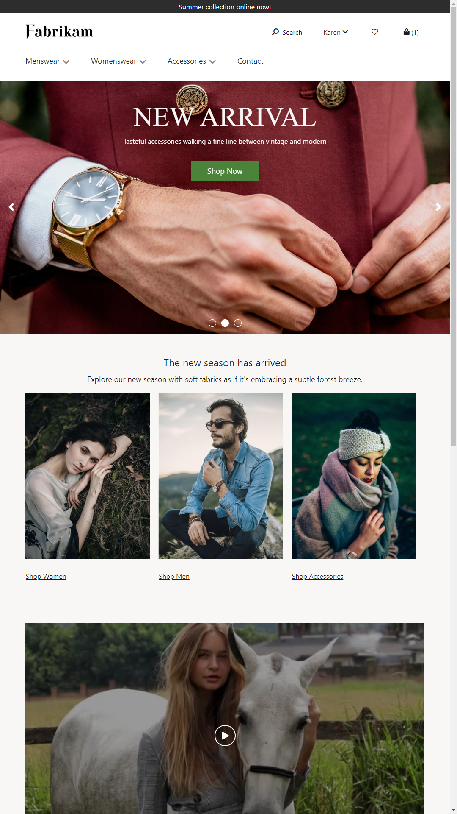
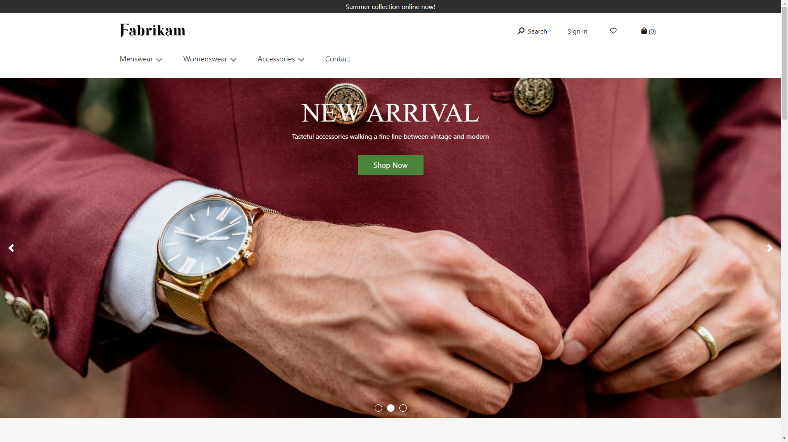
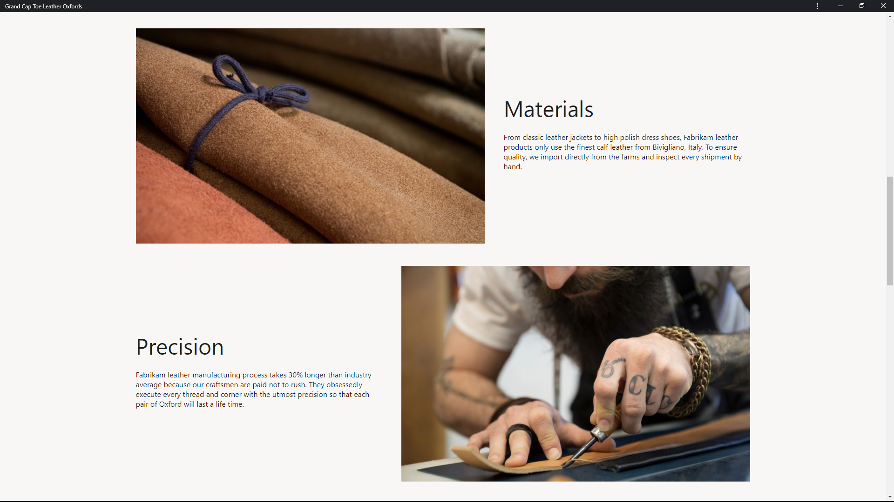
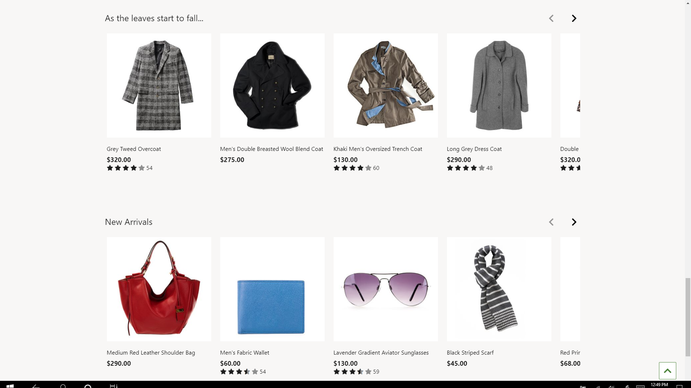

Übersicht der Startseite
Important
Dynamics 365 Retail ist jetzt Dynamics 365 Commerce und bietet umfassende Handelsfunktionen für alle Kanäle – von E-Commerce über Shops bis hin zu Callcentern. Weitere Informationen zu diesen Änderungen finden Sie unter Microsoft Dynamics 365 Commerce.
Dieser Artikel enthält eine Übersicht über die Startseite in Microsoft Dynamics 365 Commerce.
Übersicht
Die Startseite ist die Standardseite, auf die Käufer beim Besuch einer E-Commerce-Website zugreifen. In der Regel werden auf dieser Seite Produkte und Werbeaktionen unter Verwendung einer Kombination von Marketingmodulen dargestellt. Die Startseite sollte viele Bilder und Texte enthalten, um Käufer anzusprechen.
Die folgende Abbildung zeigt ein Beispiel für eine Startseite, die mit der Modulbibliothek und dem Design „Fabrikam“ erstellt wurde.

Oben auf der Startseite befindet sich eine Kopfzeile mit allen Produktkategorien und anderen Seiten, die der Einzelhändler für die Kunden verwenden möchte. Unten in der Startseite befindet sich eine Fußzeile mit Direktlinks zu verschiedenen Themen, die Kunden interessieren könnten.
Im Hauptbereich der Startseite können Produkte, Kategorien oder Werbeaktionen mithilfe von verschiedenen Dynamics 365 Commerce-Modulen verwendet werden.
Hero – In der Regel zeigt der erste Eintrag oben im Hauptbereich ein oder mehrere „Hero“ -Bilder, die neue Produkte und Werbeaktionen im Geschäft hervorheben. Wenn es mehrere Hero-Bilder gibt, werden sie in einem Karussellmodul gehostet, damit Benutzer sie durchsuchen können.
Die folgende Abbildung zeigt ein Beispiel für eine Startseite, auf der das erste Element im Hauptabschnitt ein Hero-Layout eines Inhaltsblockmoduls mit der Bezeichnung „Neue Wareneingänge“ ist.

Funktion – Ein Funktionslayout eines Inhaltsblockmoduls dient zur Vermarktung von Produkten oder Werbeaktionen mithilfe einer Kombination aus Bildern und Text. Funktionslayouts können unabhängig voneinander verwendet oder in einem Karussellmodul gehostet werden.
Die folgende Abbildung zeigt ein Beispiel für Funktionslayouts eines Inhaltsblockmoduls auf einer Startseite.

Kachel – Ein Kachellayout eines Inhaltsblockmoduls wird verwendet, um mehrere Produkte oder Produktkategorien mithilfe einer Kombination aus Bildern und Text in einem mehrspaltigen Layout zu präsentieren. In der Abbildung einer Startseite, die weiter oben in diesem Thema angezeigt wird, wird ein Kachellayout für das dreispaltige Rendering der Elemente Shop für Frauen, Shop für Männer und Accessoire-Shop verwendet.
Video-Player – Ein Video-Player-Modul kann verwendet werden, um Videoinhalte auf der Startseite zu präsentieren. Die Abbildung einer Startseite, die weiter oben in diesem Thema angezeigt wird, enthält ein Video-Player-Modul.
Textblock – Ein umfangreicher Inhaltsblock kann verwendet werden, um Textinhalte auf der Startseite in einem ein- oder mehrspaltigen Layout darzustellen.
Produktempfehlungen – Produktempfehlungsmodule werden verwendet, um Listen wie Neu, Populär und Bestseller auf der Startseite anzuzeigen. Diese Listen stellen Produkte basierend auf Einkaufstrends vor und können algorithmisch generiert oder manuell kuratiert werden. Sie helfen Kunden dabei, Top-Produkte schnell zu entdecken und dann weiter einzukaufen.
Die folgende Abbildung zeigt ein Beispiel für Produktempfehlunsmodule auf einer Startseite.

Note
Alle hier aufgelisteten Module können auf jeder Websiteseite verwendet werden. Ihre Platzierung auf der Startseite ist jedoch wichtig, da auf dieser Seite Kunden zum ersten Mal mit Ihrer Website interagieren.
Zusätzliche Ressourcen
Übersicht der Produktdetailseiten